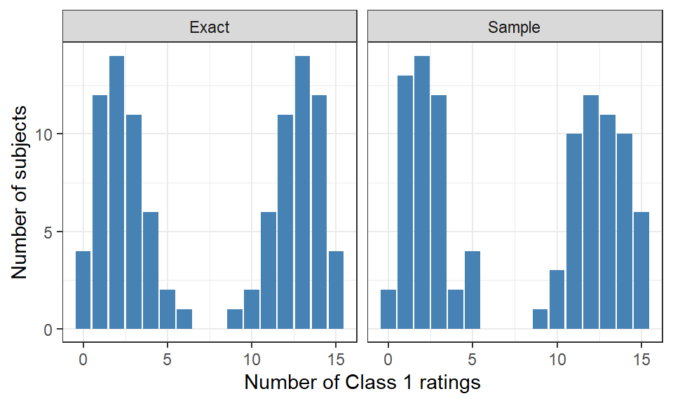

This is a user guide to the tapModel package, which you can find on github. The guide will show you how to format a data set of ratings and fit t-a-p models to the data. The library has been designed to make it as easy as possible to generate parameter estimates and goodness of fit tests, so you can think about the meaning of the results instead of fiddling with data formats. The chart in Figure 1 shows the work flow for analyzing a binary rating set. There are two branches, one to estimate the average t-a-p model parameters and the other to estimate rater and subject parameters, which is only possible if rater identifiers are present.
Show the code
flowchart TB A(raw_ratings) -->|"format_raw_ratings()"|B(ratings) B --> |"as_binary_ratings()"|C(binary_ratings) C --> |"as_counts()"|D[counts] D --> |"fit_counts()"|F[params] C --> |"fit_ratings()"|E[rating_params]
flowchart TB
A(raw_ratings) -->|"format_raw_ratings()"|B(ratings)
B --> |"as_binary_ratings()"|C(binary_ratings)
C --> |"as_counts()"|D[counts]
D --> |"fit_counts()"|F[params]
C --> |"fit_ratings()"|E[rating_params]
Figure 1: Data flow diagram for ratings
Raw ratings can come in a variety of forms, so the first step is to standardize the data into binary ratings with integer subject identifiers and (optionally) rater identifiers. The format_raw_ratings() function is intended for this purpose. It assumes that ratings values are found in columns, meaning that there are one or more columns in the data that comprise only ratings and all the ratings. It can be that the ratings are in rows instead, in which case you’ll need to transpose the data before applying the formatting function.
The formatting function returns data frame in long form with the first column rater_id and the second rating. If there is a rater identifier, it is next as rater_id. There may be other columns of data used for explanatory purposes, which will follow. The data types for the columns are left unchanged.
Usually we want to start analysis by estimating the three-parameter t-a-p model, which is computed from the rating counts of Class 1 ratings per subject. This is accomplished by applying the as_counts() function to the binary ratings and sending that to fit_counts(). If you have rater identifiers in the data you can fit the individual subject and rater parameters with fit_ratings() as shown in Figure 1.
2 Data Types
As illustrated in Figure 1, raw ratings data first needs to be converted into a standardized format, including standardized column names. From there, ratings data can be transformed in a number of ways to produce summaries and estimates. The sections below describe these transformations and data types.
2.1 Raw ratings
The information in a raw ratings data frame needs to be given structure to use the analytical functions. Each column of raw data will be one of:
Rating. This can be text or numerical, ordinal or categorical. For the basic t-a-p model, ratings are converted to binary before analysis. Note that ordinal ratings need to sort in the correct order. For example, a scale of “strongly agree” to “strongly disagree” won’t normally sort into the correct order, but can be fixed by appending a number, like “1 = strongly agree.” Or you can use a factor variable in R to arrange the values in order.
Subject identifier. Each subject being rated needs a unique identifier or we can’t do a t-a-p analysis. Originally this identifier can be text or numerical, but it will be converted to an integer. Sometimes the subject is not explicitly identified, but each row of data corresponds to a unique subject. In this case, we can create an identifier by using the row number.
Rater identifier. It’s optional to have a rater identifier, but you should include it if you have one. Without identifying unique raters, we must assume that they have identical characteristics. This isn’t usually a good assumption if the raters are human. With rater identifiers, we can estimate accuracy and bias for each.
Categories of ratings. A simple rating set may have only one column called “rating,” but a survey with five questions has five categories of response; a customer satisfaction survey might have “quality of service” and “timelines” included in the categories. If there’s more than one category, we usually want to filter to one at a time for analysis. For relationships between items (like a factor analysis or correlation) there are other tools besides t-a-p models to use. However, we could compare the reliability of the items by estimating the t-a-p parameters for each category.
Other descriptive information. Information about the subject or rater that’s either used in analysis or there for annotation.
A helper function format_data(raw_ratings) is provided to help with data conversion, but you may prefer to do that yourself, e.g. using dplyr data operations from the tidyverse.
2.2 Example: Long data format
The simplest form of a rating data set has ratings in a single column, with other columns adding information.
This is a simple data arrangement with identified raters, and one row of data per subject. Ratings are found in each column. This might be a portfolio review, with a pass/fail outcome.
The majority of functions in the tapModel package operate with binary data. If the rating scale is not originally binary, for example it’s a 1-4 scale, then before using binary functions, we have to make a choice of how to convert to binary.
Show the code
flowchart TB A(raw_ratings) -->|"format_raw_ratings()"|B(ratings) B --> |"as_binary_ratings()"|C(binary_ratings)
flowchart TB
A(raw_ratings) -->|"format_raw_ratings()"|B(ratings)
B --> |"as_binary_ratings()"|C(binary_ratings)
Figure 2: Data flow diagram for creating binary ratings
The conversion can be done by using the two functions in Figure 2, as illustrated using the wine data (Hodgson, 2008), with the choice that Class 1 will be ratings of 2,3, or 4, and Class 0 is the ratings of 1.
Show the code
library(tidyverse)library(tapModel)library(knitr)#' Load the included wine datadata(wine)#' It has rating in columns, one for each wine judge. Each row is a wine.ratings <-format_raw_ratings(wine,rating_cols =c("J1","J2","J3","J4"),rating_colnames_type ="rater",subject_id_col =NULL,rater_id_col =NULL,prune =FALSE)#' To compute the t-a-p model, we need the counts for each class. This is a #' dataframe with one row per subjec, with two columns:#' N_r, the number of ratings for that subject#' N_c, the number of ratings in class 1 for that subject#' #' If we define Class 1 to be "acceptable" wine, with ratings {2,3,4} vs #' Class 0 = rating 1, we can find the counts withbinary_ratings <- tapModel::as_binary_ratings(ratings, in_class =c(2,3,4)) binary_ratings |>head(5) |>kable()
Table 1
subject_id
rating
rater_id
1
1
J1
2
1
J1
3
1
J1
4
1
J1
5
1
J1
Note that in this case, the column headers J1, J1, … correspond to judges, but that these are not unique identifiers for the judges. The rater_id column that’s automatically created by format_raw_ratings() should not be used as a rater ID. There’s no way to know this without knowing the source of the data.
In coding practice, I use ratings to mean binary_ratings most of the time. That’s what you’ll see in the other chapters of this site. To verify that a (binary) ratings data frame is correct, use verify_ratings(ratings), which will halt after flagging any problems, or return a zero.
2.5 Counts
Show the code
flowchart TB A(raw_ratings) -->|"format_raw_ratings()"|B(ratings) B --> |"as_binary_ratings()"|C(binary_ratings) C --> |"as_counts()"|D[counts] C --> |"as_count_index()"|E[count_index]
flowchart TB
A(raw_ratings) -->|"format_raw_ratings()"|B(ratings)
B --> |"as_binary_ratings()"|C(binary_ratings)
C --> |"as_counts()"|D[counts]
C --> |"as_count_index()"|E[count_index]
Figure 3: Data flow diagram for creating binary ratings to create counts
There are two types of count data proceeding from binary ratings. If we want individual subject counts, we use as_count_index(). There’s a more compact way to represent the data if subject IDs are not needed, for which we use as_counts(). Continuing with the binary ratings we made from the wine data, the difference is illustrated below.
Table 2: Count index showing number of raters and Class 1 ratings by subject.
subject_id
N_r
N_c
1
4
4
2
4
4
3
4
4
4
4
3
5
4
2
The last shown row of Table 2 tells us that the fifth wine had four raters, two of whom rated it Class 1 (i.e. a rating above 1). If we don’t need to keep track of individual subjects, we can use as_counts() instead.
Show the code
binary_ratings |>as_counts() |>kable()
Table 3: Counts enumerating the number of instances of each combination of number of raters and Class 1 ratings
N_r
N_c
n
4
0
10
4
1
15
4
2
25
4
3
43
4
4
90
The first row of Table 3 tells us that there were \(n=10\) subjects where the four judges unanimously aggreed that the wine was Class 0 (a rating of 1 on the 1-4 scale). In 90 cases they unanimously agreed on Class 1 (rating of 2-4). It’s this more compact representation that gets used by the estimation algorithms fit_counts() or fit_counts_mcmc(), the latter of which uses a Bayesian estimation with Monte Carlo methods.
To verify that a counts data frame is correct, use verify_counts(counts), which will halt after flagging any problems, or return a zero.
2.6 Parameters
The purpose of the tapModel package is to estimate model parameters for a variety of models. The simplest type is a params named list or array of (usually) the three parameters \(t\), \(a\), and \(p\). Note that data frames are lists in R, so the following are all acceptable.
Table 4: Types of admissible param objects, which contain parameters for the basic model.
Show the code
params_1 <-c(t = .5, a = .5, p = .5)verify_params(params_1)params_2 <-list(t = .5, a = .5, p = .5)verify_params(params_2)params_3 <-data.frame(t = .5, a = .5, p = .5)verify_params(params_3)
There is a variation of this that allows for a bifurcation of the accuracy and randomness parameters, so that \(a\) becomes \((a_0, a_1)\) and \(p\) becomes \((p_0,p_1)\). Currently these extended parameters are only used in a few other places, like simulating data. This will likely change over time as more features are added.
2.7 Rating Parameters
The basic hierarchical model assigns each subject \(i\) a truth probability \(t_i\) and each rater \(j\) parameters \(a_j\) and \(p_j\). So each rating potentially corresponds to a unique combination of parameters, making it convenient to package all this information in one data frame. These objects are generically called rating_params, and are the main object of interest for much of the work we’ll do. Most functions are designed to work with a rating_params data frame.
There are three main ways to make one of these. First, we can fit a basic model and then “upscale” the results.
Notice the uniformity of the parameters in Table 5, since we’re simply unpacking the average parameters into individual assignments. This can be useful as a starting point for estimating custom parameters, and can also be useful if we want to use functions that require rating_params like subject_calibration(rating_params).
The second way to get the rating_params() is to fit the ratings instead of counts.
Table 7: Generating a random rating_params from specified parameters.
subject_id
rating
rater_id
t
a
p
1
0
1
0.01
0.67
0.48
1
0
2
0.01
0.64
0.29
1
1
3
0.01
0.74
0.70
1
0
4
0.01
0.69
0.64
1
0
5
0.01
0.71
0.55
2
1
1
0.85
0.67
0.48
2
0
2
0.85
0.64
0.29
2
1
3
0.85
0.74
0.70
Instead of providing a parameter list, you can also just provide an existing rating_params data frame using generate_ti_aj_pj_ratings(rating_params = my_rating_params) , and samples will be drawn from the parameters for subjects and raters. This is used, for example, to see if we can recover parameters by fitting the simulated ratings and matching to the original parameters.
3 Fitting Models to Data
To compute the three-parameter t-a-p model, use either fit_counts(counts) or fit_counts_mcmc(counts). The former uses (by default) an E-M algorithm, and the latter will use a Stan specification with flat priors to solve the binomial mixture problem. The E-M algorithm is very fast, but the MCMC version will potentially reveal any bimodal densities for parameters (see Chapter 4) and provide the draws data for detailed examination.
View MACE Stan code
The MCMC methods return the full model, which you can inspect in a variety of ways, including shinystan, an interactive tool for analyzing convergence, parameter estimates, and more.
To fit hierarchical models, use fit_ratings(ratings) or fit_ratings_mcmc(ratings). See the function help pages for more details on options. The section below gives more detail about the types of models that are provided.
4 Bayesian Models
Bayesian estimation using Monte Carlo Markov Chain (MCMC) estimation methods are flexible in allowing for maximum likelihood estimation over any likelihood function you can imagine. This includes the standard t-a–p three-parameter model, but also includes hierarchical models where each subject is assigned a truth value and each rater is assigned an accuracy estimate. The tapModel package provides some limited interface to the most common of these models using library(cmdstanr). Installing that package entails some setup work. Please see the package documentation to install and test your installation before trying out the code below.
The Bayesian versions of the analytical functions are denoted with “_mcmc”. These use model descriptions written in Stan and require additional software to use. You’ll need to install library(cmdstanr) and library(LaplacesDemon), which may entail installing the tools needed to compile the source code for Stan to run. These functions are provided for users who are comfortable with MCMC output and Bayesian models.
The use of Stan for Bayesian estimation is also included in the package, with an easy interface for these models:
t-a-p.stan, a three-parameter t-a-p model
t-a0a1-p.stan, a four-parameter model that splits the accuracy parameter into \(a0\) and \(a1\), so that raters can have different accuracies depending on the true classification, and
t-a0a1-p0p1.stan, a five-parameter version that expands the four-parameter version to also include \(p0\) and \(p1\), so the guessing probabilities are also conditional on the true classification.
t_i-a-p prob.stan, a random-effects (hierarchical) model where each subject gets a probabilistic truth parameter \(t_i \epsilon [0,1]\).
t_i-a-p soft step.stan, a random-effects (hierarchical) model where each subject gets a probabilistic truth parameter \(t_i \epsilon [0,1]\), but it is parameterized by \(\tau_i \epsilon \mathbb{R}\), and a differentiable step function is applied to nudge the \(t_i\) parameters toward zero or one. The amount of nudging can be specified in the model.
t-a-p_j.stan, the extension of the Cohen kappa that is covered in Chapter 5. It allows each rater to have an individual parameter for random assignment of Class 1 in cases where the rating is inaccurate.
See Chapter 4 for examples of the first three of these, and Chapter 5 for examples of the rest.
4.1 Sample MCMC Code
We can use the counts data frame from the introduction to illustrate the code for generating the basic t-a-p model using Bayesian MCMC methods.
Show the code
# ratings with t = .5, a = .7, p = .5counts <-generate_sample_ratings() |>as_counts()#' Use the convenience function to run the MCMC for the three-parameter-modelmcmc_output <- tapModel::fit_counts_mcmc(counts, quiet =TRUE) #' Get the summary mcmc_params <- mcmc_output$paramsmcmc_params |>kable(digits =2)
Table 8: Estimating the t-a-p model with Bayesian MCMC methods.
position
var
avg
p05
p25
median
p75
p95
mode1
mode2
sd
1
lp__
-172.39
-174.82
-172.95
-172.08
-171.46
-171.05
-171.39
NA
1.25
2
a
0.72
0.66
0.70
0.72
0.74
0.78
0.73
NA
0.03
3
p
0.58
0.45
0.53
0.58
0.63
0.70
0.60
NA
0.07
4
t
0.58
0.49
0.54
0.58
0.61
0.66
0.58
NA
0.05
Notice that the parameter estimates are given in a richer format that the basic params data, e.g. from fit_counts(counts). It returns a data frame with the mean and interquartile range of the draws, as well as an attempt to identify bimodal densities, which can indicate a problem with model fit or non-unique solutions. We can convert to the basic format by picking which estimate (e.g. average, median, or mode) to use. This is demonstrated in the code block below.
Show the code
params <- mcmc_params |>filter(var %in%c("t","a","p")) |>select(var, avg) |># or median, or mode1 etcspread(var, avg)params |>kable(digits =2)
Table 9: Converting to a params format using the average.
a
p
t
0.72
0.58
0.58
One advantage of the MCMC approach is the ability to examine draw densities. These can be visualized as follows.
Figure 4: Parameter estimate densities from MCMC draws. Shading shows 5% to 95%, the inter-quartile range, and the mean estimate. The dotted lines show the scaled likelihood.
Note that to get the draws, we need to call the draws() function on the fitted model. The parentheses are required, since it’s a function call, not a data object.
5 Simulating Ratings
In addition to loading data, it’s possible to simulate ratings from specified parameters. There are three functions provided for that purpose, all with reasonable defaults to make it quick to generate a test set of ratings.
For three-parameter ratings, use generate_sample_ratings(), where you can specify the number of subjects and raters and the t-a-p parameters. If you want to avoid sampling error, you can (almost) exactly reproduce the long-run distribution with generate_exact_ratings().
Show the code
set.seed(123)ratings_1 <-generate_sample_ratings(N_r =15) |>as_counts() |>mutate(Method ="Sample") ratings_2 <-generate_exact_ratings(N_r =15) |>as_counts() |>mutate(Method ="Exact")rbind(ratings_1, ratings_2) |>ggplot(aes(x = N_c, y = n)) +geom_col(fill ="steelblue") +facet_grid(. ~ Method) +theme_bw() +xlab("Number of Class 1 ratings") +ylab("Number of subjects")

Figure 5: Histograms of simulated data, comparing random samples to exact distributions.
Notice in Figure 5 that there’s sampling error in the Sample plot, while the Exact plot is perfectly symmetrical.
The third way to simulate ratings, generate_ti_aj_pj_ratings(), allows for individual parameters for each subject and rater. To specify these parameters, you can either provide a rating_params data frame, or give the parameters in a list. For the latter method, each rater will rate each subject.
References
Hodgson, R. T. (2008). An examination of judge reliability at a major US wine competition. Journal of Wine Economics, 3(2), 105–113.